Ignition¶
Basic → Advanced
In one sentence: the Ignition module decides when each spark plug fires and how long each coil charges first, from the advance map, its corrections and every safety retard, inside limits you set.
What it does¶
Basic
A petrol engine burns its charge with a spark. The spark has to come before the piston reaches the top of its stroke (top dead centre, TDC), because the flame takes time to spread. How far before TDC it fires is the ignition advance (or timing), in crank degrees BTDC (before TDC). Too little advance wastes power and heats the exhaust. Too much makes the charge explode instead of burning (knock, or detonation), and knock breaks pistons.
Before each spark the ECU switches the coil on so current can build in it. That charging time is the dwell. When the ECU switches the coil off, the coil fires the plug.
The Ignition module does these jobs for every engine cycle:
- Chooses a base advance from the Advance Table (engine speed against load). While the engine is cranking it can use a separate Cranking Advance table instead.
- Adds corrections: coolant, air temperature, fuel composition, gear, post-start, four generic tables, the rev-limiter approach, transient throttle, the idle stabiliser, and one overall trim.
- Subtracts retards that other modules ask for: knock, engine protection, nitrous, anti-lag and traction control.
- Clamps the result between Min Advance and Max Advance.
- Gives each cylinder its own angle, with an optional per-cylinder trim.
- Chooses the dwell from a table against battery voltage (and, if you want, engine speed).
The module always runs. It has no Enabled switch: an engine with coils needs it. How the coils are wired (distributor, wasted spark or coil-on-plug) is set on the same studio page, and this chapter covers it too. There is also a Fixed Timing mode that holds one advance so you can check the crank sensor setting with a timing light. Do that check before you tune anything else.
Timing is the other fastest way to break an engine
Too much advance under load breaks pistons and ring lands, often with no warning you can hear. Set Max Advance before the engine first runs, check base timing with a light (below), and add advance in small steps while you log knock. Chapter 30 sets up knock detection; chapter 39 covers tuning timing.
How it works¶
Intermediate
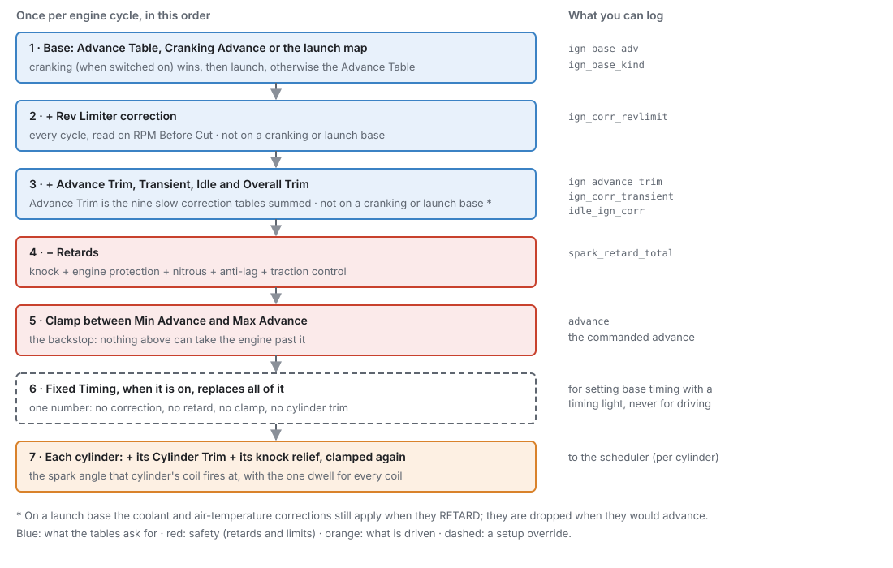
1 · The base advance¶
The base is one of three tables. Only one is used at a time:
- Cranking Advance, when Cranking Advance is switched on and the engine is cranking. The engine counts as cranking while it turns below Cranking Threshold (default 400 rpm) and has not yet caught.
- The launch ignition map, while launch control is active (chapter 26). Cranking wins if both are somehow true.
- The Advance Table at all other times.
The Advance Table is read against Engine RPM across and Fuel Load (the load the fuel side calculates, in kPa absolute) down. You can switch on a third axis for ethanol content, so one map covers petrol, E85 and every blend in between. Positive numbers are degrees before TDC.
The base is published as Ign Base Advance ign_base_adv, and which table it came from as Ign
Base Table ign_base_kind (Advance Map, Cranking Table or Launch Table).
2 · Corrections, added¶
On an Advance Table base, these are added to it:
- Rev Limiter correction, read against RPM Before Cut (how far the engine is below the hard rev limit). It is worked out every engine cycle, because RPM moves quickly.
- Advance Trim
ign_advance_trim: the sum of the nine slow corrections: Coolant, Air Temp, Fuel Comp, Gear, Post-Start and Generic 1 to Generic 4. Their inputs change slowly, so they are worked out away from the engine cycle. One table is refreshed every millisecond, in turn, so the whole set is fresh every 9 ms. - Transient correction
ign_corr_transientfrom Transient Throttle (chapter 19). - Idle correction
idle_ign_corrfrom the idle stabiliser (chapter 21). It is 0 away from idle. - Overall Trim: one fixed number, the same at every speed and load.
Every correction table can be switched off. A correction that is off is not read at all, which is not the same as a table full of zeros. All of them ship on. Their tables ship neutral (all zeros), except Coolant, which ships with a small cold retard (see Corrections below).
On a cranking base, none of these are added. The cranking table already follows coolant, and adding the coolant correction as well would count it twice. On a launch base, none are added either, with one exception: the Coolant and Air Temp corrections still apply when they retard. A launch map is absolute, but it must not remove heat protection from a car sitting hot on the line.
3 · Retards, subtracted¶
Then everything that pulls timing out is subtracted, whatever the base:
| Retard | Channel | Set up in |
|---|---|---|
| Knock | Knock Retard knock_retard |
Chapter 30 |
| Engine protection | Protection Ign Retard prot_ign_retard |
Chapter 29 |
| Nitrous | Nitrous Timing Retard nitrous_retard |
Chapter 28 |
| Anti-lag | Anti-Lag Retard antilag_retard |
Chapter 28 |
| Traction control | Traction Timing Retard traction_retard |
Chapter 26 |
Their sum is published as Total Timing Retard spark_retard_total.
4 · The clamp¶
The result is held between Min Advance (default −10°) and Max Advance (default 40°). This is
the backstop: a wrong table cell, a stacked set of corrections or a sensor reading nonsense cannot
take the engine past it. The clamped value is the commanded advance, Ignition Advance advance.
Overall Trim is added before the retards and the clamp. Winding it up cannot outrun a knock or protection retard, and cannot pass Max Advance.
5 · Fixed timing¶
With Fixed Timing on, the advance is replaced by Fixed Timing Advance, after every step above. No correction, no retard, no clamp and no cylinder trim can move it. An ignition cut (rev limiter, protection) still cuts, because a cut stops the coil rather than changing the angle.
6 · Each cylinder's angle¶
Each cylinder the engine has gets its own angle: the advance, plus that cylinder's Cylinder Trim table, plus its knock relief, clamped to Min/Max Advance again. Knock relief works like this: the global advance carries the retard of the worst-knocking cylinder, and a cylinder that has knocked less gets the difference back. So one noisy cylinder does not retard all the others.
On a rotary engine the trailing plug fires at the leading angle minus the Trailing Split (see Rotary engines below).
7 · Dwell¶
The dwell comes from the Ignition Dwell Time table, read against battery voltage. You can switch on a second axis for engine speed. One dwell is used for every coil in a cycle.
Dwell is a time, but the ECU schedules by crank angle. So it converts the dwell to an angle at the current engine speed and starts charging that many degrees before the spark:
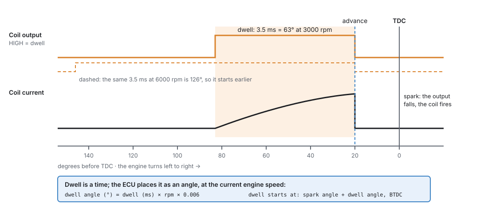
dwell angle (°) = dwell (ms) × rpm × 0.006
The dwell for the next spark is armed as soon as the previous spark fires, and it is placed again about 90° before that cylinder's TDC with the latest engine speed and advance. If the advance has jumped so far that there is no room left for a full dwell, the coil starts charging at once: one short dwell rather than a missed cylinder.
Two limits protect the coil:
- The dwell must fit between two sparks of the same coil. The ECU shortens it if needed, so that at least 20° of crank angle is left free after each spark, for the spark to burn before the coil charges again. On a distributor the free gap is a quarter of the spacing between sparks, if that is larger. The spacing depends on the mode (Figure 20.3): a whole engine cycle for a coil-on-plug coil with cam phase known, one revolution for a wasted-spark coil or any coil without phase, and the cycle divided by the cylinder count for a distributor.
- A coil can never stay charged for long. If a coil has been on for more than twice the longest dwell asked for (never less than 3 ms, never more than 20 ms), the ECU switches it off, and it sparks at whatever angle that is. This catches a lost spark event, so the coil and its driver do not cook.
What the dwell limit means on a V8 distributor
A V8 fires eight times per 720° cycle, so the one coil has 90° between sparks. The gap kept free is a quarter of that, 22.5°, so the longest dwell is 67.5°. At 6000 rpm (36° per ms) that is 1.9 ms. A coil set to 3.0 ms reaches this limit from 3750 rpm up. A four-cylinder on wasted spark has 340° to use, which is 8 ms even at 7000 rpm: the limit never matters there.
8 · Ignition modes¶
How the coils are wired is the Ignition Mode (on Engine Configuration ▸ Ignition System):
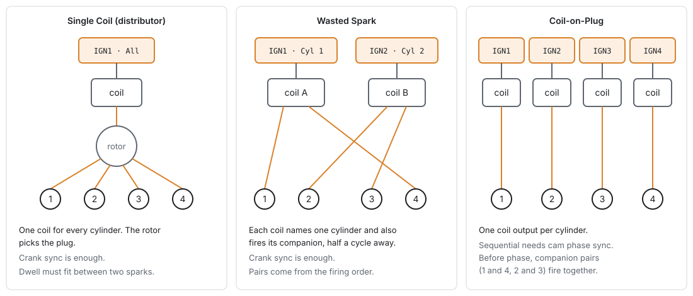
- Single Coil (distributor): one coil output, its row set to All Cylinders, fires for every cylinder. The distributor's rotor picks the plug. Crank sync is enough.
- Wasted Spark: each coil fires two cylinders together: the one on its compression stroke and its companion, the cylinder half an engine cycle away, which is on its exhaust stroke and wastes its spark. Each coil output names one cylinder. The ECU finds the companion from the firing order while it runs, so changing the firing order never needs an output moved. Crank sync is enough.
- Coil-on-Plug: one coil output per cylinder. To fire each coil once per cycle (sequentially), the ECU needs cam phase sync (chapter 16). Until it has phase, it fires each companion pair together, as wasted spark, so the engine still starts and runs.
Changing Ignition Mode, Cylinders or Engine Cycle makes the studio lay the coil outputs out again. On coil-on-plug, IGN1 serves cylinder 1, IGN2 cylinder 2, and so on. On wasted spark there is one coil per companion pair, named by the lower cylinder number, in cylinder order: a four-cylinder firing 1-3-4-2 gets IGN1 on cylinder 1 (pair 1 and 4) and IGN2 on cylinder 2 (pair 2 and 3). A distributor gets one output, IGN1, on All Cylinders. Each IGN output's own page (chapter 18) shows its cylinder and polarity, and is where you change one by hand.
Advanced — companions on other engines
The companion is always the cylinder whose TDC is half an engine cycle away: 360° on a four-stroke, 180° on a two-stroke. A rotary has no companion; its two plugs per rotor are handled by the engine cycle, not by this setting. On an odd-fire engine the companion is found from each cylinder's TDC angle, so it only exists where one TDC is exactly half a cycle from another. A cylinder with no companion gets a coil of its own.
Before you start¶
Basic
You need:
- A working trigger (chapter 16). With no position there is no spark. For sequential coil-on-plug you also need a cam signal for phase sync.
- The engine basics (chapter 15): Cylinders, Engine Cycle and the firing order on Engine Configuration ▸ Cylinders & Firing. Ignition fires cylinders by number from that order.
-
Coils wired to the IGN outputs (chapter 12). The jaytek_v1 board has twelve ignition outputs, IGN1 to IGN12. Each is a driver output that goes HIGH to charge the coil.
-
The coil outputs' polarity checked (chapter 18). Active High is the default and suits the jaytek_v1 IGN outputs.
- A battery voltage reading, which the board provides. The dwell table reads it.
- Coolant and intake air temperature sensors for the coolant and air temperature corrections (chapter 17). A flex-fuel sensor if you use the ethanol axis or the Fuel Comp correction, and gear detection (chapter 32) if you use the Gear correction.
- A timing light, to check base timing.
Get the coil polarity right before you connect coils
An output with the wrong Active High setting is ON whenever it should be off, including at reset. For a coil that means charging continuously: it overheats and can fail within seconds. The ECU's maximum-dwell cutoff only knows about the dwells it asked for, so it cannot catch an inverted output. Check each IGN output's polarity with the coils unplugged (chapter 43).
Setting it up¶
Basic → Intermediate
The settings live on two groups of pages: Configuration ▸ Engine Configuration ▸ Ignition System (the hardware), and Configuration ▸ Ignition Tuning (the tables). Some pages only appear in the navigation tree when they apply: each Corrections page only while that correction is on, Cylinder Trims only for the cylinders the engine has, and Trailing Split only when Engine Cycle is Rotary.
Step 1 — The Ignition System page¶
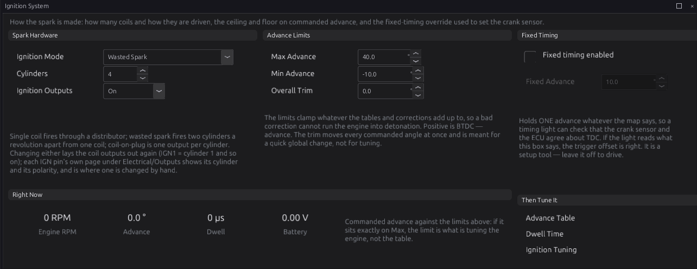
- Choose Ignition Mode
engine.ign_mode: Single Coil (distributor), Wasted Spark (the default) or Coil-on-Plug, as in Figure 20.3. - Check Cylinders
engine.cylinder_count. It is the same setting as on Cylinders & Firing. - Check the coil outputs. Changing either of the two settings above (or Engine Cycle) lays the coil outputs out again. Open each IGN output's page (chapter 18) and check it names the cylinder you wired to it. A coil or injector change takes effect at the next engine stop.
- Leave Ignition Outputs
engine.ign_enableOn. Off stops every coil firing, the way a rev-limiter spark cut does. Use it to crank with no spark (to check fuel delivery, or to clear a flooded engine). It is stored in the tune, so it stays off after a reset. - Set the advance limits in Advance Limits (Step 5 below explains them).
- Leave Fixed Timing off for now. You will use it in Step 6.
The Right Now panel shows engine speed, commanded advance, dwell (in µs) and battery voltage live. If the advance sits exactly on Max Advance, the limit is tuning the engine, not the table.
Step 2 — The Ignition Tuning page¶
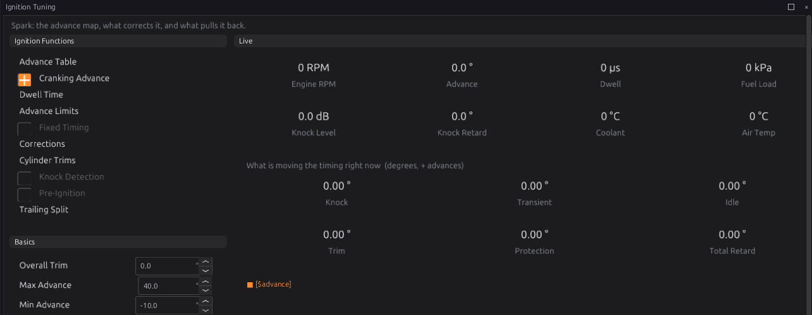
This page is the hub. From it you can switch Cranking Advance and Fixed Timing on and off, reach every table, and switch knock and pre-ignition detection on (chapter 30). Basics repeats the Overall Trim and the two limits.
Step 3 — Dwell¶
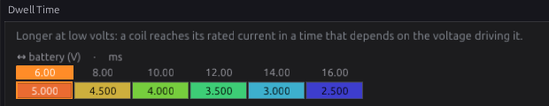
A coil needs a certain time to reach its rated current, and that time depends on the voltage driving it: lower voltage needs longer. Too short gives a weak or missing spark, worst while cranking when the battery is lowest. Too long heats the coil and its driver for no extra spark.
- Find the coil maker's dwell at 14 V (or at the voltage they quote).
- Put it in the 14 V cell of Ignition Dwell Time
ignition.dwell_table, and keep the table's shape: roughly double the dwell at half the voltage. The shipped table is 5.0, 4.5, 4.0, 3.5, 3.0 and 2.5 ms at 6, 8, 10, 12, 14 and 16 V. Cells run from 0 to 20 ms. - Leave the RPM axis off unless you need it (see Tuning it).
The table's axes are settings of their own: which channel each reads, and whether the optional axis is on. Change them from the table's right-click menu, Setup ▸ Table Axis Setup…. The same applies to every table in this chapter.
Step 4 — Cranking advance¶
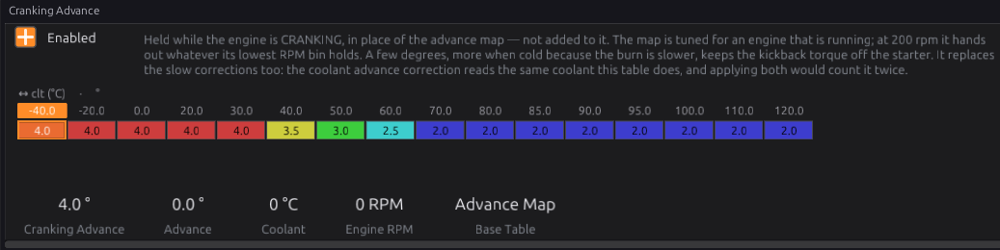
With Cranking Advance ignition.cranking_ign_enable off (the default), a cranking engine fires on
the Advance Table at whatever its lowest RPM column says. That number was tuned for a running engine.
Switch it on to give the engine a small, fixed advance while it cranks. A little more when cold,
because the burn is slower. Less when warm, because advance while cranking pushes back against the
starter.
- Tick Enabled.
- Fill in Cranking Advance
ignition.cranking_ign_table, against coolant temperature. Use small positive numbers. The shipped curve is 4.0° up to 30 °C, 3.5° at 40 °C, 3.0° at 50 °C, 2.5° at 60 °C and 2.0° from 70 °C. The cells run from −30° to 60°. - If a tired battery makes the engine crank slowly, you can switch on the table's second axis, battery voltage. It has exactly two breakpoints (8 V and 12 V by default).
The cranking advance replaces the Advance Table and all the corrections while the engine cranks. The retards still apply.
Step 5 — Advance limits¶
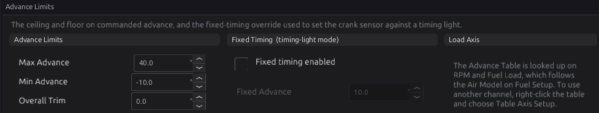
- Max Advance
ignition.max_adv_deg(0 to 60°, default 40°): the most advance ever commanded. Set it to the most this engine could survive, not the most it wants. A sensible value is a couple of degrees above the highest cell you mean to run. - Min Advance
ignition.min_adv_deg(−60 to 0°, default −10°): the most retard ever commanded. It stops a stack of retards pushing the spark so late that the engine only makes heat. If you use anti-lag, which retards timing heavily on purpose, check its retard fits above this floor (chapter 28). - Overall Trim
ignition.overall_adv_trim(−60 to 60°, default 0): one offset added at every speed and load (on the Advance Table base; not while the cranking or launch table is in use). Use it for a quick global change, such as pulling 2° on doubtful fuel. It is also the easiest setting to leave in by accident, and the Timing Breakdown page does not show it as a row, so write down when you use it.
The Load Axis panel says what the timing is looked up on. The Advance Table reads Engine RPM and
Fuel Load fuel_load, and Fuel Load follows the Air Model on Fuel Setup: manifold pressure for
Speed-Density, throttle position for Alpha-N (chapter 19). To look a table up on something else,
right-click it and choose Table Axis Setup…: each axis has its own channel (Step 3).
Step 6 — Setting base timing with a timing light¶
Every angle the ECU commands is measured from TDC of cylinder 1. The ECU only knows where that is
through Trigger Offset BTDC trigger.trigger_offset_btdc on Engine Configuration ▸ Trigger
System (chapter 16). A wrong offset shifts every spark by the same error, and no table can fix
that. A bench stimulator cannot check it either, because it agrees with whatever offset you set. Only
a timing light on the real engine can.
Fixed Timing holds one advance so you can compare it against the light:
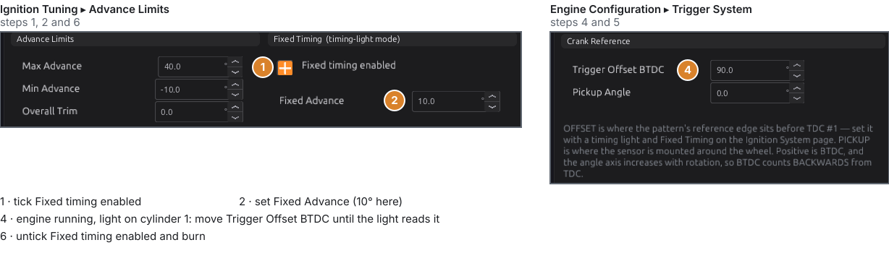
- On Ignition Tuning ▸ Advance Limits (or the Ignition System page), tick Fixed timing
enabled
ignition.fixed_timing_enable. - Set Fixed Advance
ignition.fixed_timing_deg(−30 to 60°, default 10°). 10° is the usual choice: far enough from TDC to read on a light, and retarded enough to be safe at idle. - Start the engine and let it idle. Clip the timing light to cylinder 1's lead and read the timing marks.
- On Engine Configuration ▸ Trigger System, change Trigger Offset BTDC until the light reads the Fixed Advance. The ECU picks up a new offset straight away, without stopping the engine. Raising the offset makes every spark fire later: if the light shows more advance than you set, raise the offset by the difference; if it shows less, lower it.
- Check the reading again at a slightly higher speed, say 2000 rpm. It should not move. If it drifts with speed, suspect the trigger (chapter 16), not the offset.
- Untick Fixed timing enabled and burn the tune.
Fixed Timing holds the number exactly. No idle correction, knock retard or cylinder trim can move it while you read the light. It also ignores Min and Max Advance, so what you type is what fires.
Fixed Timing is a setup tool
Nothing protects the engine while it is on: no knock retard, no protection retard, no clamp. Do not drive on it. The studio greys Fixed Advance until the switch is on.
Step 7 — The Advance Table¶

Ignition Advance Table ignition.ign_table is the engine's main timing calibration. Every other
table in this chapter corrects it, so make this map right for a warm engine on good fuel and let the
corrections handle the rest.
- Size: 21 RPM columns by 22 load rows as shipped. Either axis can have from 2 to 32 breakpoints
(Ign RPM Axis
ignition.ign_rpm_axis, Ign Load Axisignition.ign_load_axis). Put breakpoints where timing changes fastest, such as the step into boost, not evenly. - Cells: −60 to 60°, in tenths of a degree.
- Ethanol axis: switch on the table's third axis (Ign Ethanol Axis (%), 0 % and 100 % by default, up to 4 planes) for a flex-fuel engine. Both planes start identical, so switching it on changes nothing until you edit the E100 plane.
The shipped map is a starting surface, not your engine's calibration
The default table is a generic shape so the studio has something to show. It knows nothing about your compression, fuel, cams or boost. Before the first start, go through it and make sure no cell you can reach is more advanced than you are sure is safe (chapter 39).
Step 8 — Corrections¶
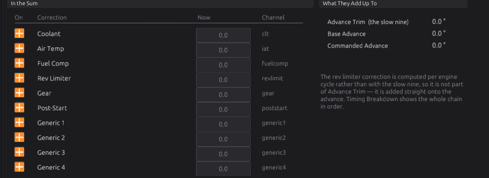
Each correction is a table of degrees added to the advance: positive advances, negative retards. Each has an on/off switch, and each has its own page under Corrections. The tables and their inputs:
| Correction | Table | Reads (X) | Optional axis (off as shipped) | Switch |
|---|---|---|---|---|
| Coolant | CLT Advance Correction | coolant temperature | MAP | ignition.enable_clt |
| Air Temp | Ign Air Temp Correction | intake air temperature | MAP | ignition.enable_iat |
| Fuel Comp | Ign Fuel Comp Correction | ethanol content (%) | MAP | ignition.enable_fuelcomp |
| Rev Limiter | Ign RPM Limiter Correction | RPM Before Cut | MAP | ignition.enable_revlimit |
| Gear | Ign Gear Correction | Fuel Load (X), RPM (Y) | gear | ignition.enable_gear |
| Post-Start | Ign Post-Start Correction | coolant temperature | time since start (s) | ignition.enable_poststart |
| Generic 1–4 | Ign Generic n Correction | RPM by default, any channel | MAP by default, any channel | ignition.enable_generic1…4 |
All correction cells run from −60 to 60°. Things worth knowing about each:
-
Coolant ships with a small retard when cold: −5.0° at −40 °C, −3.5° at −30 °C, −2.5° at −20 °C, −1.5° at −10 °C, −0.8° at 0 °C, −0.3° at 10 °C and 0 from 20 °C up. Use the hot end to pull timing from an engine that runs hot, where it is already close to knock.
-
Air Temp is normally where timing comes out as the intake heats. On a turbo engine, switch on its MAP axis so you can pull more under boost than at cruise.
- Fuel Comp is the other way to handle ethanol: one correction table instead of a whole extra plane on the Advance Table. Use one or the other, not both.
-
Rev Limiter reads RPM Before Cut: 0 is the hard limit, and the breakpoints (0, 50, 100, 150, 200 and 300 rpm as shipped) count back from it. Pulling a little timing just before the cut softens the limiter. When the rev limiter is switched off, RPM Before Cut reads 99999, so the table reads its last column: keep that column at 0.
-
Gear only varies by gear once you switch its gear axis on (Ign Gear Axis, gears 1 to 8). As shipped the axis is off, and every gear reads the same plane.
- Post-Start only fades out with time once you switch its time axis on (Ign Post-Start Time Axis (s), 0 to 30 s as shipped). With that axis off it is simply another coolant curve that applies all the time.
- Generic 1–4 can read any channel on either axis. Use them for anything the fixed tables do not cover, such as oil temperature or a dash switch. They add to everything else; they never override.
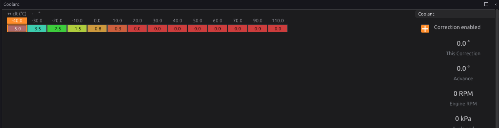
Step 9 — Cylinder trims (optional)¶
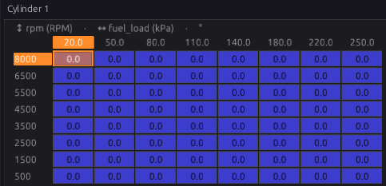
Each cylinder has an Ign Cylinder n Correction table ignition.cyl1_ign_corr_table … cyl12,
8 × 8 against Fuel Load and RPM, in degrees added to that cylinder only. The axes (Ign Cyl Load
Axis (kPa), Ign Cyl RPM Axis) are shared by all twelve. There is no switch: they are always
read, and they ship at zero.
Use them only with evidence that one cylinder differs, such as per-cylinder EGT, individual knock readings, or a wideband on that cylinder. They are meant for an engine that fires sequentially: coil-on-plug with cam phase sync, as the page says. On a shared coil (wasted spark or distributor), or before phase sync, one coil fires for more than one cylinder, so a trim on one cylinder is not isolated to it.
Rotary engines¶
Advanced
With Engine Cycle set to Rotary (chapter 15), each rotor has a leading and a trailing plug. Each
coil output's Plug setting says which one it fires. The trailing plug has no advance of its own:
it fires at the leading angle minus the Trailing Split ignition.trail_split_table, a 16 × 16
table against RPM and Fuel Load (with an optional ethanol axis). A positive split fires the trailing
plug later. It ships at 6.0° everywhere. The split is ignored on a piston engine.
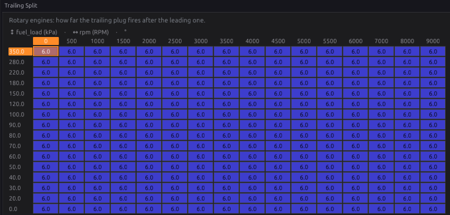
Worked examples¶
Intermediate
These are starting points, not finished tunes. The timing values are examples; your engine's safe advance comes from tuning it (chapter 39).
Example 1 — naturally aspirated four-cylinder, wasted spark
A four-cylinder firing 1-3-4-2, a crank wheel only (no cam sensor), two twin-tower coil packs. This is the setup shown in Figures 20.4 to 20.8.
| Setting | Value | Why |
|---|---|---|
| Ignition Mode | Wasted Spark | no cam sensor, so no phase sync; wasted spark only needs crank sync |
| Cylinders | 4 | |
| Coil outputs | IGN1 → Cylinder 1, IGN2 → Cylinder 2 | laid out by the studio: IGN1 fires 1 and 4, IGN2 fires 2 and 3 |
| Dwell Time | coil maker's figure at 14 V, table shape kept | the shipped table already has 3.0 ms at 14 V |
| Cranking Advance | on, shipped curve | a few degrees while cranking, whatever the map's lowest column says |
| Max / Min Advance | 40° / −10° | the shipped limits; lower Max if the map never needs 40° |
| Fixed Timing | 10° for the timing-light check, then off | Step 6 |
| Air Temp correction | e.g. 0 up to 40 °C, −1° at 60 °C, −3° at 80 °C | pull timing as the intake heats |
Example 2 — turbocharged six-cylinder, coil-on-plug
A straight six firing 1-5-3-6-2-4, with a cam sensor for phase sync and a coil on every plug.
| Setting | Value | Why |
|---|---|---|
| Ignition Mode | Coil-on-Plug | sequential once the cam gives phase; paired (1/6, 2/5, 3/4) until then |
| Coil outputs | IGN1 → Cylinder 1 … IGN6 → Cylinder 6 | laid out by the studio |
| Max Advance | a couple of degrees above the highest cell you run | so a wrong cell or trim is caught |
| Air Temp correction | MAP axis on; e.g. −2° at 60 °C rising to −4° at 80 °C in the boost rows | hot air under boost brings knock forward |
| Gear correction | gear axis on; e.g. −3° in 1st and −1.5° in 2nd in the boost rows | the drivetrain, not the engine, is the limit in low gears |
| Cylinder trims | only with evidence, e.g. −1° on the cylinder that knocks first | Step 9 |
Pairs from the firing order: the companion of cylinder 1 is the cylinder three firing positions later, 6; then 2 and 5, and 3 and 4.
Example 3 — V8 with a distributor
One coil, one output, a distributor to send the spark round.
| Setting | Value | Why |
|---|---|---|
| Ignition Mode | Single Coil (distributor) | |
| Cylinders | 8 | the firing order still matters: it sets when each spark event happens |
| Coil output | IGN1 → All Cylinders | laid out by the studio |
| Dwell Time | coil figure at 14 V | above about 3750 rpm a 3.0 ms dwell is cut back by the ECU to fit between sparks (Section 7) |
If the spark weakens at high RPM, the coil may not recharge in the short gap. A coil that charges faster helps; a longer dwell setting cannot.
Tuning it¶
Intermediate → Advanced
Chapter 39 covers timing tuning in depth: finding best-torque timing, knock margins and fuel effects. This section covers what is specific to this module.
Log these channels (chapter 42): rpm, fuel_load, advance, ign_base_adv, ign_base_kind,
ign_advance_trim, ign_corr_revlimit, spark_retard_total, knock_retard, knock_level,
dwell, battery, and each ign_corr_* you have switched on.
Read the chain before you change the map¶
When the timing is not what you expected, open Ignition Tuning ▸ Timing Breakdown (Figure 20.15 under Diagnostics). Read it down: which base table is in use and its figure, every correction, every retard, and what was finally commanded. Change the table that is actually responsible. A common mistake is adding advance to the map to fix a correction or retard that is pulling timing out.
- If Advance sits exactly on Max or Min Advance, the clamp is deciding the timing, not your tables.
- If the base table reads Cranking Table after the engine has caught, the engine has not passed Cranking Threshold.
- A correction reading 0 is a table of zeros at this point, not a broken input.
Dwell¶
- Start from the coil maker's figure at 14 V and keep the voltage shape.
- If the spark is weak while cranking (the engine is reluctant to start, especially cold), check the 6 V and 8 V cells first.
- Feel the coils after a long idle. A hot coil is taking more dwell than it needs; bring the whole table down a little.
- Switch the RPM axis on (Dwell RPM Axis, up to 8 breakpoints) only if you need to shorten dwell at high RPM, where the time between sparks is itself the limit.
Advance¶
- Check base timing with the light first (Step 6). Nothing else is meaningful until that is right.
- Set Max Advance just above the highest cell you intend to run.
- Tune the Advance Table with a warm engine and the corrections neutral, then shape the corrections. A correction exists to handle one condition, so tune it in that condition (coolant when cold, air temperature on a hot day, gear in low gears).
- Log
knock_retard. A cell that keeps collecting knock retard is too advanced for the fuel.
Overall Trim for a quick test
To see whether an engine is timing-sensitive somewhere, pull 2° with Overall Trim and compare two logs. Set it back to 0 when you are done: it does not show as a row on Timing Breakdown.
Diagnostics¶
Intermediate

The ignition module sets no trouble code of its own. These codes, raised by the ECU's setup checks and the trigger decoder, explain an engine that gets no spark on some or all cylinders:
| Code | Meaning | What sets it | What to check |
|---|---|---|---|
| P1651 | Config: invalid firing order | A cylinder is listed twice or missing in the firing order. Nothing fires (no spark, no fuel) until it is fixed. | Cylinders & Firing (chapter 15). The Firing Order Invalid firing_order_fault light shows it live. |
| P1653 | Config: a cylinder in the firing order has no coil output | No coil output row serves that cylinder (on wasted spark, a coil serving its companion counts). That cylinder gets no spark. | Each IGN output's cylinder (chapter 18); the Ignition Mode |
| P0335–P0339 | Trigger faults | The trigger decoder | Chapter 16. No position means no spark. |
Both configuration codes are raised at severity level 3. What level 3 does is set in your engine protection levels (chapter 29). They are checked against the configuration the ECU is actually running, which only changes at an engine-stopped reconfigure.
Output channels worth watching:
| Channel | Meaning |
|---|---|
Ignition Advance advance |
The commanded advance, after the clamp (degrees BTDC) |
Ign Base Advance ign_base_adv / Ign Base Table ign_base_kind |
The base and which table it came from |
Ign Advance Trim ign_advance_trim |
The nine slow corrections, summed |
Ign Corr: Coolant ign_corr_clt … Ign Corr: Post-Start ign_corr_poststart |
Each slow correction on its own |
Ign Corr: Rev Limit ign_corr_revlimit |
The rev-limiter correction |
Total Timing Retard spark_retard_total |
Every retard, summed |
Timing Below Main Map spark_below_map |
How far the commanded advance is below the Advance Table, whatever the base. The torque model reads it. |
Coil Dwell dwell |
The dwell for this cycle, in µs |
Troubleshooting¶
Basic → Advanced
| Symptom | Likely causes | Check |
|---|---|---|
| No spark at all | Ignition Outputs off; no trigger sync; no coil output rows; a cut active | Ignition System ▸ Ignition Outputs; sync level (chapter 16); P1651/P1653; the rev limiter and protection (chapters 27 and 29) |
| Spark on some cylinders only | An IGN output names the wrong cylinder or none; wiring | Each IGN output's cylinder (chapter 18); P1653; output test (chapter 43) |
| Timing light reading does not match Fixed Advance | Trigger Offset BTDC wrong | Step 6: change the offset, not the table |
| Timing light reading drifts with RPM | Trigger problem (a missed or extra tooth, noise) | Chapter 16 trigger diagnostics |
| Engine kicks back or is hard to start | Too much advance while cranking; weak spark | Switch Cranking Advance on with small values; the dwell at 6–8 V |
| Coils get hot | Dwell too long; wrong output polarity | The dwell table; the output's Active High (chapter 18) |
| Misfire at high RPM on a distributor | The dwell is limited to fit between sparks | Example 3; a faster-charging coil |
| Advance stuck at one number | Fixed Timing left on; Advance at Max or Min | The Fixed Timing switch; Timing Breakdown |
| Advance lower than the map everywhere | Overall Trim left in; a correction or retard pulling timing | Overall Trim; Timing Breakdown; spark_retard_total |
| Gear correction does the same in every gear | Its gear axis is off | Right-click the table ▸ Setup ▸ Table Axis Setup… |
| Post-start correction never fades | Its time axis is off | Switch on the time axis (Table Axis Setup) |
| Timing pulled only near the rev limit, or all the time with the limiter off | The Rev Limiter correction's last column is not 0 | Its table: the last column is what is read with the limiter off |
| Timing does not follow MAP on an Alpha-N engine | The Advance Table reads Fuel Load, which is throttle position under Alpha-N | Right-click the table ▸ Table Axis Setup… and set the load axis channel (Step 3) |
Settings reference¶
Every Ignition setting, generated from the definition the studio loads:
| Setting | What it does |
|---|---|
Max Advanceignition.max_adv_degRange: 0.0 to 60.0 Default: 40.0 Units: deg |
The most advance the ignition system will ever command, after every table and correction has been summed. It is the backstop, not a tuning knob: a mistyped table cell, a runaway correction or a sensor reading nonsense cannot advance the engine past this. Set it to the most this engine could survive, not to the most it wants. |
Min Advanceignition.min_adv_degRange: -60.0 to 0.0 Default: -10.0 Units: deg |
The most RETARD ever commanded (a negative advance). It bounds the other end for the same reason — a stacked set of protection retards should not be able to push the spark so late that the engine simply makes heat, and this is what stops it. |
Overall Ign Trimignition.overall_adv_trimRange: -60.0 to 60.0 Default: 0.0 Units: deg |
A single global offset added to the final advance, everywhere. It is the fastest way to move the whole map at once — pulling a degree or two out of an entire tune on suspect fuel, for example — without touching a single table cell. Because it applies at every operating point, it is also the easiest thing to leave in by accident. |
Coolant Advance Correction Enabledignition.enable_cltRange: Off or On Default: On |
The coolant advance correction table is evaluated and summed onto the advance. Off, it contributes nothing and its table is not read. |
Air Temp Advance Correction Enabledignition.enable_iatRange: Off or On Default: On |
The intake-air-temperature advance correction is evaluated and applied. This is normally where timing is pulled as the intake heats — turning it off removes that protection, not just a trim. |
Fuel Comp Advance Correction Enabledignition.enable_fuelcompRange: Off or On Default: On |
The fuel-composition advance correction is evaluated and applied. Only meaningful with an ethanol source assigned. |
Gear Advance Correction Enabledignition.enable_gearRange: Off or On Default: On |
The per-gear advance correction is evaluated and applied. Only meaningful with gear detection running. |
Post-Start Advance Correction Enabledignition.enable_poststartRange: Off or On Default: On |
The post-start advance correction is evaluated and applied for the seconds after the engine catches. |
Generic 1 Advance Correction Enabledignition.enable_generic1Range: Off or On Default: On |
The first spare advance correction table is evaluated and applied. |
Generic 2 Advance Correction Enabledignition.enable_generic2Range: Off or On Default: On |
The second spare advance correction table is evaluated and applied. |
Generic 3 Advance Correction Enabledignition.enable_generic3Range: Off or On Default: On |
The third spare advance correction table is evaluated and applied. |
Generic 4 Advance Correction Enabledignition.enable_generic4Range: Off or On Default: On |
The fourth spare advance correction table is evaluated and applied. |
Rev Limiter Advance Correction Enabledignition.enable_revlimitRange: Off or On Default: On |
The advance correction that comes in as the rev limiter is approached is evaluated and applied. It is computed per engine cycle rather than with the slow set, because its input moves as fast as the RPM does. |
Cranking Advanceignition.cranking_ign_enableRange: Off or On Default: Off |
Use the cranking advance table instead of the main map while the engine is cranking. Off, cranking fires on the advance map at whatever its lowest RPM bin says — a number tuned for running, not for starting. |
Fixed Timingignition.fixed_timing_enableRange: Off or On Default: Off |
Hold one ignition advance instead of using the tables, for setting base timing with a timing light. Turn it on, adjust Trigger Offset BTDC until the light reads Fixed Timing Advance, then turn it back off. Every trim and retard is bypassed while it is on; an ignition cut still cuts. |
Fixed Timing Advanceignition.fixed_timing_degRange: -30.0 to 60.0 Default: 10.0 Units: deg |
The advance held while Fixed Timing is on, in degrees BTDC. 10° is the usual choice — far enough off TDC to read on a light, retarded enough to be safe at idle. |
Ignition Dwell Time X Channelignition.dwell_table_x_srcRange: -1 to 32767 Default: 51 |
WHICH SIGNAL the X axis of 'Ignition Dwell Time' is looked up on. The axis holds the breakpoints; this says what is compared against them, so changing it re-points the table at a different quantity without moving a single cell — and the breakpoints, chosen for the old signal's range and units, will almost certainly need redrawing. |
Ignition Dwell Time X Axis Enabledignition.dwell_table_x_enRange: Off or On Default: On |
Use the X axis of 'Ignition Dwell Time' as a real dimension. Off, the table collapses to a curve on its remaining axes and this one is ignored entirely — the right default for most optional axes, since a dimension nobody calibrates is a set of duplicate rows that still has to be kept in step. |
Ignition Dwell Time Y Channelignition.dwell_table_y_srcRange: -1 to 32767 Default: 319 |
WHICH SIGNAL the Y axis of 'Ignition Dwell Time' is looked up on. The axis holds the breakpoints; this says what is compared against them, so changing it re-points the table at a different quantity without moving a single cell — and the breakpoints, chosen for the old signal's range and units, will almost certainly need redrawing. |
Ignition Dwell Time Y Axis Enabledignition.dwell_table_y_enRange: Off or On Default: Off |
Use the Y axis of 'Ignition Dwell Time' as a real dimension. Off, the table collapses to a curve on its remaining axes and this one is ignored entirely — the right default for most optional axes, since a dimension nobody calibrates is a set of duplicate rows that still has to be kept in step. |
Cranking Advance X Channelignition.cranking_ign_table_x_srcRange: -1 to 32767 Default: 61 |
WHICH SIGNAL the X axis of 'Cranking Advance' is looked up on. The axis holds the breakpoints; this says what is compared against them, so changing it re-points the table at a different quantity without moving a single cell — and the breakpoints, chosen for the old signal's range and units, will almost certainly need redrawing. |
Cranking Advance Y Channelignition.cranking_ign_table_y_srcRange: -1 to 32767 Default: 51 |
WHICH SIGNAL the Y axis of 'Cranking Advance' is looked up on. The axis holds the breakpoints; this says what is compared against them, so changing it re-points the table at a different quantity without moving a single cell — and the breakpoints, chosen for the old signal's range and units, will almost certainly need redrawing. |
Cranking Advance Y Axis Enabledignition.cranking_ign_table_y_enRange: Off or On Default: Off |
Use the Y axis of 'Cranking Advance' as a real dimension. Off, the table collapses to a curve on its remaining axes and this one is ignored entirely — the right default for most optional axes, since a dimension nobody calibrates is a set of duplicate rows that still has to be kept in step. |
Ignition Advance Table X Channelignition.ign_table_x_srcRange: -1 to 32767 Default: 319 |
WHICH SIGNAL the X axis of 'Ignition Advance Table' is looked up on. The axis holds the breakpoints; this says what is compared against them, so changing it re-points the table at a different quantity without moving a single cell — and the breakpoints, chosen for the old signal's range and units, will almost certainly need redrawing. |
Ignition Advance Table Y Channelignition.ign_table_y_srcRange: -1 to 32767 Default: 125 |
WHICH SIGNAL the Y axis of 'Ignition Advance Table' is looked up on. The axis holds the breakpoints; this says what is compared against them, so changing it re-points the table at a different quantity without moving a single cell — and the breakpoints, chosen for the old signal's range and units, will almost certainly need redrawing. |
Ignition Advance Table Z Channelignition.ign_table_z_srcRange: -1 to 32767 Default: 496 |
WHICH SIGNAL the Z axis of 'Ignition Advance Table' is looked up on. The axis holds the breakpoints; this says what is compared against them, so changing it re-points the table at a different quantity without moving a single cell — and the breakpoints, chosen for the old signal's range and units, will almost certainly need redrawing. |
Ignition Advance Table Z Axis Enabledignition.ign_table_z_enRange: Off or On Default: Off |
Use the Z axis of 'Ignition Advance Table' as a real dimension. Off, the table collapses to a curve on its remaining axes and this one is ignored entirely — the right default for most optional axes, since a dimension nobody calibrates is a set of duplicate rows that still has to be kept in step. |
Trailing Split Table X Channelignition.trail_split_table_x_srcRange: -1 to 32767 Default: 319 |
WHICH SIGNAL the X axis of 'Trailing Split Table' is looked up on. The axis holds the breakpoints; this says what is compared against them, so changing it re-points the table at a different quantity without moving a single cell — and the breakpoints, chosen for the old signal's range and units, will almost certainly need redrawing. |
Trailing Split Table Y Channelignition.trail_split_table_y_srcRange: -1 to 32767 Default: 125 |
WHICH SIGNAL the Y axis of 'Trailing Split Table' is looked up on. The axis holds the breakpoints; this says what is compared against them, so changing it re-points the table at a different quantity without moving a single cell — and the breakpoints, chosen for the old signal's range and units, will almost certainly need redrawing. |
Trailing Split Table Z Channelignition.trail_split_table_z_srcRange: -1 to 32767 Default: 0 |
WHICH SIGNAL the Z axis of 'Trailing Split Table' is looked up on. The axis holds the breakpoints; this says what is compared against them, so changing it re-points the table at a different quantity without moving a single cell — and the breakpoints, chosen for the old signal's range and units, will almost certainly need redrawing. |
Trailing Split Table Z Axis Enabledignition.trail_split_table_z_enRange: Off or On Default: Off |
Use the Z axis of 'Trailing Split Table' as a real dimension. Off, the table collapses to a curve on its remaining axes and this one is ignored entirely — the right default for most optional axes, since a dimension nobody calibrates is a set of duplicate rows that still has to be kept in step. |
CLT Advance Correction X Channelignition.clt_ign_corr_table_x_srcRange: -1 to 32767 Default: 61 |
WHICH SIGNAL the X axis of 'CLT Advance Correction' is looked up on. The axis holds the breakpoints; this says what is compared against them, so changing it re-points the table at a different quantity without moving a single cell — and the breakpoints, chosen for the old signal's range and units, will almost certainly need redrawing. |
CLT Advance Correction Y Channelignition.clt_ign_corr_table_y_srcRange: -1 to 32767 Default: 273 |
WHICH SIGNAL the Y axis of 'CLT Advance Correction' is looked up on. The axis holds the breakpoints; this says what is compared against them, so changing it re-points the table at a different quantity without moving a single cell — and the breakpoints, chosen for the old signal's range and units, will almost certainly need redrawing. |
CLT Advance Correction Y Axis Enabledignition.clt_ign_corr_table_y_enRange: Off or On Default: Off |
Use the Y axis of 'CLT Advance Correction' as a real dimension. Off, the table collapses to a curve on its remaining axes and this one is ignored entirely — the right default for most optional axes, since a dimension nobody calibrates is a set of duplicate rows that still has to be kept in step. |
Ign Air Temp Correction X Channelignition.iat_ign_corr_table_x_srcRange: -1 to 32767 Default: 134 |
WHICH SIGNAL the X axis of 'Ign Air Temp Correction' is looked up on. The axis holds the breakpoints; this says what is compared against them, so changing it re-points the table at a different quantity without moving a single cell — and the breakpoints, chosen for the old signal's range and units, will almost certainly need redrawing. |
Ign Air Temp Correction Y Channelignition.iat_ign_corr_table_y_srcRange: -1 to 32767 Default: 273 |
WHICH SIGNAL the Y axis of 'Ign Air Temp Correction' is looked up on. The axis holds the breakpoints; this says what is compared against them, so changing it re-points the table at a different quantity without moving a single cell — and the breakpoints, chosen for the old signal's range and units, will almost certainly need redrawing. |
Ign Air Temp Correction Y Axis Enabledignition.iat_ign_corr_table_y_enRange: Off or On Default: Off |
Use the Y axis of 'Ign Air Temp Correction' as a real dimension. Off, the table collapses to a curve on its remaining axes and this one is ignored entirely — the right default for most optional axes, since a dimension nobody calibrates is a set of duplicate rows that still has to be kept in step. |
Ign Fuel Comp Correction X Channelignition.fuelcomp_ign_corr_table_x_srcRange: -1 to 32767 Default: 496 |
WHICH SIGNAL the X axis of 'Ign Fuel Comp Correction' is looked up on. The axis holds the breakpoints; this says what is compared against them, so changing it re-points the table at a different quantity without moving a single cell — and the breakpoints, chosen for the old signal's range and units, will almost certainly need redrawing. |
Ign Fuel Comp Correction Y Channelignition.fuelcomp_ign_corr_table_y_srcRange: -1 to 32767 Default: 273 |
WHICH SIGNAL the Y axis of 'Ign Fuel Comp Correction' is looked up on. The axis holds the breakpoints; this says what is compared against them, so changing it re-points the table at a different quantity without moving a single cell — and the breakpoints, chosen for the old signal's range and units, will almost certainly need redrawing. |
Ign Fuel Comp Correction Y Axis Enabledignition.fuelcomp_ign_corr_table_y_enRange: Off or On Default: Off |
Use the Y axis of 'Ign Fuel Comp Correction' as a real dimension. Off, the table collapses to a curve on its remaining axes and this one is ignored entirely — the right default for most optional axes, since a dimension nobody calibrates is a set of duplicate rows that still has to be kept in step. |
Ign RPM Limiter Correction X Channelignition.rpmlimit_ign_corr_table_x_srcRange: -1 to 32767 Default: 320 |
WHICH SIGNAL the X axis of 'Ign RPM Limiter Correction' is looked up on. The axis holds the breakpoints; this says what is compared against them, so changing it re-points the table at a different quantity without moving a single cell — and the breakpoints, chosen for the old signal's range and units, will almost certainly need redrawing. |
Ign RPM Limiter Correction Y Channelignition.rpmlimit_ign_corr_table_y_srcRange: -1 to 32767 Default: 273 |
WHICH SIGNAL the Y axis of 'Ign RPM Limiter Correction' is looked up on. The axis holds the breakpoints; this says what is compared against them, so changing it re-points the table at a different quantity without moving a single cell — and the breakpoints, chosen for the old signal's range and units, will almost certainly need redrawing. |
Ign RPM Limiter Correction Y Axis Enabledignition.rpmlimit_ign_corr_table_y_enRange: Off or On Default: Off |
Use the Y axis of 'Ign RPM Limiter Correction' as a real dimension. Off, the table collapses to a curve on its remaining axes and this one is ignored entirely — the right default for most optional axes, since a dimension nobody calibrates is a set of duplicate rows that still has to be kept in step. |
Ign Generic 1 Correction X Channelignition.igngen1_ign_corr_table_x_srcRange: -1 to 32767 Default: 319 |
WHICH SIGNAL the X axis of 'Ign Generic 1 Correction' is looked up on. The axis holds the breakpoints; this says what is compared against them, so changing it re-points the table at a different quantity without moving a single cell — and the breakpoints, chosen for the old signal's range and units, will almost certainly need redrawing. |
Ign Generic 1 Correction Y Channelignition.igngen1_ign_corr_table_y_srcRange: -1 to 32767 Default: 273 |
WHICH SIGNAL the Y axis of 'Ign Generic 1 Correction' is looked up on. The axis holds the breakpoints; this says what is compared against them, so changing it re-points the table at a different quantity without moving a single cell — and the breakpoints, chosen for the old signal's range and units, will almost certainly need redrawing. |
Ign Generic 1 Correction Y Axis Enabledignition.igngen1_ign_corr_table_y_enRange: Off or On Default: Off |
Use the Y axis of 'Ign Generic 1 Correction' as a real dimension. Off, the table collapses to a curve on its remaining axes and this one is ignored entirely — the right default for most optional axes, since a dimension nobody calibrates is a set of duplicate rows that still has to be kept in step. |
Ign Generic 2 Correction X Channelignition.igngen2_ign_corr_table_x_srcRange: -1 to 32767 Default: 319 |
WHICH SIGNAL the X axis of 'Ign Generic 2 Correction' is looked up on. The axis holds the breakpoints; this says what is compared against them, so changing it re-points the table at a different quantity without moving a single cell — and the breakpoints, chosen for the old signal's range and units, will almost certainly need redrawing. |
Ign Generic 2 Correction Y Channelignition.igngen2_ign_corr_table_y_srcRange: -1 to 32767 Default: 273 |
WHICH SIGNAL the Y axis of 'Ign Generic 2 Correction' is looked up on. The axis holds the breakpoints; this says what is compared against them, so changing it re-points the table at a different quantity without moving a single cell — and the breakpoints, chosen for the old signal's range and units, will almost certainly need redrawing. |
Ign Generic 2 Correction Y Axis Enabledignition.igngen2_ign_corr_table_y_enRange: Off or On Default: Off |
Use the Y axis of 'Ign Generic 2 Correction' as a real dimension. Off, the table collapses to a curve on its remaining axes and this one is ignored entirely — the right default for most optional axes, since a dimension nobody calibrates is a set of duplicate rows that still has to be kept in step. |
Ign Generic 3 Correction X Channelignition.igngen3_ign_corr_table_x_srcRange: -1 to 32767 Default: 319 |
WHICH SIGNAL the X axis of 'Ign Generic 3 Correction' is looked up on. The axis holds the breakpoints; this says what is compared against them, so changing it re-points the table at a different quantity without moving a single cell — and the breakpoints, chosen for the old signal's range and units, will almost certainly need redrawing. |
Ign Generic 3 Correction Y Channelignition.igngen3_ign_corr_table_y_srcRange: -1 to 32767 Default: 273 |
WHICH SIGNAL the Y axis of 'Ign Generic 3 Correction' is looked up on. The axis holds the breakpoints; this says what is compared against them, so changing it re-points the table at a different quantity without moving a single cell — and the breakpoints, chosen for the old signal's range and units, will almost certainly need redrawing. |
Ign Generic 3 Correction Y Axis Enabledignition.igngen3_ign_corr_table_y_enRange: Off or On Default: Off |
Use the Y axis of 'Ign Generic 3 Correction' as a real dimension. Off, the table collapses to a curve on its remaining axes and this one is ignored entirely — the right default for most optional axes, since a dimension nobody calibrates is a set of duplicate rows that still has to be kept in step. |
Ign Generic 4 Correction X Channelignition.igngen4_ign_corr_table_x_srcRange: -1 to 32767 Default: 319 |
WHICH SIGNAL the X axis of 'Ign Generic 4 Correction' is looked up on. The axis holds the breakpoints; this says what is compared against them, so changing it re-points the table at a different quantity without moving a single cell — and the breakpoints, chosen for the old signal's range and units, will almost certainly need redrawing. |
Ign Generic 4 Correction Y Channelignition.igngen4_ign_corr_table_y_srcRange: -1 to 32767 Default: 273 |
WHICH SIGNAL the Y axis of 'Ign Generic 4 Correction' is looked up on. The axis holds the breakpoints; this says what is compared against them, so changing it re-points the table at a different quantity without moving a single cell — and the breakpoints, chosen for the old signal's range and units, will almost certainly need redrawing. |
Ign Generic 4 Correction Y Axis Enabledignition.igngen4_ign_corr_table_y_enRange: Off or On Default: Off |
Use the Y axis of 'Ign Generic 4 Correction' as a real dimension. Off, the table collapses to a curve on its remaining axes and this one is ignored entirely — the right default for most optional axes, since a dimension nobody calibrates is a set of duplicate rows that still has to be kept in step. |
Ign Gear Correction X Channelignition.gear_ign_corr_table_x_srcRange: -1 to 32767 Default: 125 |
WHICH SIGNAL the X axis of 'Ign Gear Correction' is looked up on. The axis holds the breakpoints; this says what is compared against them, so changing it re-points the table at a different quantity without moving a single cell — and the breakpoints, chosen for the old signal's range and units, will almost certainly need redrawing. |
Ign Gear Correction Y Channelignition.gear_ign_corr_table_y_srcRange: -1 to 32767 Default: 319 |
WHICH SIGNAL the Y axis of 'Ign Gear Correction' is looked up on. The axis holds the breakpoints; this says what is compared against them, so changing it re-points the table at a different quantity without moving a single cell — and the breakpoints, chosen for the old signal's range and units, will almost certainly need redrawing. |
Ign Gear Correction Z Channelignition.gear_ign_corr_table_z_srcRange: -1 to 32767 Default: 131 |
WHICH SIGNAL the Z axis of 'Ign Gear Correction' is looked up on. The axis holds the breakpoints; this says what is compared against them, so changing it re-points the table at a different quantity without moving a single cell — and the breakpoints, chosen for the old signal's range and units, will almost certainly need redrawing. |
Ign Gear Correction Z Axis Enabledignition.gear_ign_corr_table_z_enRange: Off or On Default: Off |
Use the Z axis of 'Ign Gear Correction' as a real dimension. Off, the table collapses to a curve on its remaining axes and this one is ignored entirely — the right default for most optional axes, since a dimension nobody calibrates is a set of duplicate rows that still has to be kept in step. |
Ign Post-Start Correction X Channelignition.post_start_ign_corr_table_x_srcRange: -1 to 32767 Default: 61 |
WHICH SIGNAL the X axis of 'Ign Post-Start Correction' is looked up on. The axis holds the breakpoints; this says what is compared against them, so changing it re-points the table at a different quantity without moving a single cell — and the breakpoints, chosen for the old signal's range and units, will almost certainly need redrawing. |
Ign Post-Start Correction Y Channelignition.post_start_ign_corr_table_y_srcRange: -1 to 32767 Default: 321 |
WHICH SIGNAL the Y axis of 'Ign Post-Start Correction' is looked up on. The axis holds the breakpoints; this says what is compared against them, so changing it re-points the table at a different quantity without moving a single cell — and the breakpoints, chosen for the old signal's range and units, will almost certainly need redrawing. |
Ign Post-Start Correction Y Axis Enabledignition.post_start_ign_corr_table_y_enRange: Off or On Default: Off |
Use the Y axis of 'Ign Post-Start Correction' as a real dimension. Off, the table collapses to a curve on its remaining axes and this one is ignored entirely — the right default for most optional axes, since a dimension nobody calibrates is a set of duplicate rows that still has to be kept in step. |
Ign Cylinder 1 Correction X Channelignition.cyl1_ign_corr_table_x_srcRange: -1 to 32767 Default: 125 |
WHICH SIGNAL the X axis of 'Ign Cylinder 1 Correction' is looked up on. The axis holds the breakpoints; this says what is compared against them, so changing it re-points the table at a different quantity without moving a single cell — and the breakpoints, chosen for the old signal's range and units, will almost certainly need redrawing. |
Ign Cylinder 1 Correction Y Channelignition.cyl1_ign_corr_table_y_srcRange: -1 to 32767 Default: 319 |
WHICH SIGNAL the Y axis of 'Ign Cylinder 1 Correction' is looked up on. The axis holds the breakpoints; this says what is compared against them, so changing it re-points the table at a different quantity without moving a single cell — and the breakpoints, chosen for the old signal's range and units, will almost certainly need redrawing. |
Ign Cylinder 2 Correction X Channelignition.cyl2_ign_corr_table_x_srcRange: -1 to 32767 Default: 125 |
WHICH SIGNAL the X axis of 'Ign Cylinder 2 Correction' is looked up on. The axis holds the breakpoints; this says what is compared against them, so changing it re-points the table at a different quantity without moving a single cell — and the breakpoints, chosen for the old signal's range and units, will almost certainly need redrawing. |
Ign Cylinder 2 Correction Y Channelignition.cyl2_ign_corr_table_y_srcRange: -1 to 32767 Default: 319 |
WHICH SIGNAL the Y axis of 'Ign Cylinder 2 Correction' is looked up on. The axis holds the breakpoints; this says what is compared against them, so changing it re-points the table at a different quantity without moving a single cell — and the breakpoints, chosen for the old signal's range and units, will almost certainly need redrawing. |
Ign Cylinder 3 Correction X Channelignition.cyl3_ign_corr_table_x_srcRange: -1 to 32767 Default: 125 |
WHICH SIGNAL the X axis of 'Ign Cylinder 3 Correction' is looked up on. The axis holds the breakpoints; this says what is compared against them, so changing it re-points the table at a different quantity without moving a single cell — and the breakpoints, chosen for the old signal's range and units, will almost certainly need redrawing. |
Ign Cylinder 3 Correction Y Channelignition.cyl3_ign_corr_table_y_srcRange: -1 to 32767 Default: 319 |
WHICH SIGNAL the Y axis of 'Ign Cylinder 3 Correction' is looked up on. The axis holds the breakpoints; this says what is compared against them, so changing it re-points the table at a different quantity without moving a single cell — and the breakpoints, chosen for the old signal's range and units, will almost certainly need redrawing. |
Ign Cylinder 4 Correction X Channelignition.cyl4_ign_corr_table_x_srcRange: -1 to 32767 Default: 125 |
WHICH SIGNAL the X axis of 'Ign Cylinder 4 Correction' is looked up on. The axis holds the breakpoints; this says what is compared against them, so changing it re-points the table at a different quantity without moving a single cell — and the breakpoints, chosen for the old signal's range and units, will almost certainly need redrawing. |
Ign Cylinder 4 Correction Y Channelignition.cyl4_ign_corr_table_y_srcRange: -1 to 32767 Default: 319 |
WHICH SIGNAL the Y axis of 'Ign Cylinder 4 Correction' is looked up on. The axis holds the breakpoints; this says what is compared against them, so changing it re-points the table at a different quantity without moving a single cell — and the breakpoints, chosen for the old signal's range and units, will almost certainly need redrawing. |
Ign Cylinder 5 Correction X Channelignition.cyl5_ign_corr_table_x_srcRange: -1 to 32767 Default: 125 |
WHICH SIGNAL the X axis of 'Ign Cylinder 5 Correction' is looked up on. The axis holds the breakpoints; this says what is compared against them, so changing it re-points the table at a different quantity without moving a single cell — and the breakpoints, chosen for the old signal's range and units, will almost certainly need redrawing. |
Ign Cylinder 5 Correction Y Channelignition.cyl5_ign_corr_table_y_srcRange: -1 to 32767 Default: 319 |
WHICH SIGNAL the Y axis of 'Ign Cylinder 5 Correction' is looked up on. The axis holds the breakpoints; this says what is compared against them, so changing it re-points the table at a different quantity without moving a single cell — and the breakpoints, chosen for the old signal's range and units, will almost certainly need redrawing. |
Ign Cylinder 6 Correction X Channelignition.cyl6_ign_corr_table_x_srcRange: -1 to 32767 Default: 125 |
WHICH SIGNAL the X axis of 'Ign Cylinder 6 Correction' is looked up on. The axis holds the breakpoints; this says what is compared against them, so changing it re-points the table at a different quantity without moving a single cell — and the breakpoints, chosen for the old signal's range and units, will almost certainly need redrawing. |
Ign Cylinder 6 Correction Y Channelignition.cyl6_ign_corr_table_y_srcRange: -1 to 32767 Default: 319 |
WHICH SIGNAL the Y axis of 'Ign Cylinder 6 Correction' is looked up on. The axis holds the breakpoints; this says what is compared against them, so changing it re-points the table at a different quantity without moving a single cell — and the breakpoints, chosen for the old signal's range and units, will almost certainly need redrawing. |
Ign Cylinder 7 Correction X Channelignition.cyl7_ign_corr_table_x_srcRange: -1 to 32767 Default: 125 |
WHICH SIGNAL the X axis of 'Ign Cylinder 7 Correction' is looked up on. The axis holds the breakpoints; this says what is compared against them, so changing it re-points the table at a different quantity without moving a single cell — and the breakpoints, chosen for the old signal's range and units, will almost certainly need redrawing. |
Ign Cylinder 7 Correction Y Channelignition.cyl7_ign_corr_table_y_srcRange: -1 to 32767 Default: 319 |
WHICH SIGNAL the Y axis of 'Ign Cylinder 7 Correction' is looked up on. The axis holds the breakpoints; this says what is compared against them, so changing it re-points the table at a different quantity without moving a single cell — and the breakpoints, chosen for the old signal's range and units, will almost certainly need redrawing. |
Ign Cylinder 8 Correction X Channelignition.cyl8_ign_corr_table_x_srcRange: -1 to 32767 Default: 125 |
WHICH SIGNAL the X axis of 'Ign Cylinder 8 Correction' is looked up on. The axis holds the breakpoints; this says what is compared against them, so changing it re-points the table at a different quantity without moving a single cell — and the breakpoints, chosen for the old signal's range and units, will almost certainly need redrawing. |
Ign Cylinder 8 Correction Y Channelignition.cyl8_ign_corr_table_y_srcRange: -1 to 32767 Default: 319 |
WHICH SIGNAL the Y axis of 'Ign Cylinder 8 Correction' is looked up on. The axis holds the breakpoints; this says what is compared against them, so changing it re-points the table at a different quantity without moving a single cell — and the breakpoints, chosen for the old signal's range and units, will almost certainly need redrawing. |
Ign Cylinder 9 Correction X Channelignition.cyl9_ign_corr_table_x_srcRange: -1 to 32767 Default: 125 |
WHICH SIGNAL the X axis of 'Ign Cylinder 9 Correction' is looked up on. The axis holds the breakpoints; this says what is compared against them, so changing it re-points the table at a different quantity without moving a single cell — and the breakpoints, chosen for the old signal's range and units, will almost certainly need redrawing. |
Ign Cylinder 9 Correction Y Channelignition.cyl9_ign_corr_table_y_srcRange: -1 to 32767 Default: 319 |
WHICH SIGNAL the Y axis of 'Ign Cylinder 9 Correction' is looked up on. The axis holds the breakpoints; this says what is compared against them, so changing it re-points the table at a different quantity without moving a single cell — and the breakpoints, chosen for the old signal's range and units, will almost certainly need redrawing. |
Ign Cylinder 10 Correction X Channelignition.cyl10_ign_corr_table_x_srcRange: -1 to 32767 Default: 125 |
WHICH SIGNAL the X axis of 'Ign Cylinder 10 Correction' is looked up on. The axis holds the breakpoints; this says what is compared against them, so changing it re-points the table at a different quantity without moving a single cell — and the breakpoints, chosen for the old signal's range and units, will almost certainly need redrawing. |
Ign Cylinder 10 Correction Y Channelignition.cyl10_ign_corr_table_y_srcRange: -1 to 32767 Default: 319 |
WHICH SIGNAL the Y axis of 'Ign Cylinder 10 Correction' is looked up on. The axis holds the breakpoints; this says what is compared against them, so changing it re-points the table at a different quantity without moving a single cell — and the breakpoints, chosen for the old signal's range and units, will almost certainly need redrawing. |
Ign Cylinder 11 Correction X Channelignition.cyl11_ign_corr_table_x_srcRange: -1 to 32767 Default: 125 |
WHICH SIGNAL the X axis of 'Ign Cylinder 11 Correction' is looked up on. The axis holds the breakpoints; this says what is compared against them, so changing it re-points the table at a different quantity without moving a single cell — and the breakpoints, chosen for the old signal's range and units, will almost certainly need redrawing. |
Ign Cylinder 11 Correction Y Channelignition.cyl11_ign_corr_table_y_srcRange: -1 to 32767 Default: 319 |
WHICH SIGNAL the Y axis of 'Ign Cylinder 11 Correction' is looked up on. The axis holds the breakpoints; this says what is compared against them, so changing it re-points the table at a different quantity without moving a single cell — and the breakpoints, chosen for the old signal's range and units, will almost certainly need redrawing. |
Ign Cylinder 12 Correction X Channelignition.cyl12_ign_corr_table_x_srcRange: -1 to 32767 Default: 125 |
WHICH SIGNAL the X axis of 'Ign Cylinder 12 Correction' is looked up on. The axis holds the breakpoints; this says what is compared against them, so changing it re-points the table at a different quantity without moving a single cell — and the breakpoints, chosen for the old signal's range and units, will almost certainly need redrawing. |
Ign Cylinder 12 Correction Y Channelignition.cyl12_ign_corr_table_y_srcRange: -1 to 32767 Default: 319 |
WHICH SIGNAL the Y axis of 'Ign Cylinder 12 Correction' is looked up on. The axis holds the breakpoints; this says what is compared against them, so changing it re-points the table at a different quantity without moving a single cell — and the breakpoints, chosen for the old signal's range and units, will almost certainly need redrawing. |
Dwell Voltage Axis binsignition.dwell_volt_axis_nRange: 2 to 8 Default: 6 |
How many breakpoints of 'Dwell Voltage Axis' are LIVE, out of 8 allocated. Shrinking the axis does not delete the values past the end — they stay in the tune and reappear if it is grown again. Every table sharing this axis is resized with it. Fewer, well-placed breakpoints beat many evenly-spaced ones: resolution is only worth spending where the surface actually bends. |
Dwell RPM Axis binsignition.dwell_rpm_axis_nRange: 1 to 8 Default: 1 |
How many breakpoints of 'Dwell RPM Axis' are LIVE, out of 8 allocated. Shrinking the axis does not delete the values past the end — they stay in the tune and reappear if it is grown again. Every table sharing this axis is resized with it. Fewer, well-placed breakpoints beat many evenly-spaced ones: resolution is only worth spending where the surface actually bends. |
Cranking Advance X Axis (CLT C default) binsignition.ci_x_axis_nRange: 2 to 16 Default: 16 |
How many breakpoints of 'Cranking Advance X Axis (CLT C default)' are LIVE, out of 16 allocated. Shrinking the axis does not delete the values past the end — they stay in the tune and reappear if it is grown again. Every table sharing this axis is resized with it. Fewer, well-placed breakpoints beat many evenly-spaced ones: resolution is only worth spending where the surface actually bends. |
Cranking Advance Y Axis (Battery V default) binsignition.ci_y_axis_nRange: 2 to 2 Default: 2 |
How many breakpoints of 'Cranking Advance Y Axis (Battery V default)' are LIVE, out of 2 allocated. Shrinking the axis does not delete the values past the end — they stay in the tune and reappear if it is grown again. Every table sharing this axis is resized with it. Fewer, well-placed breakpoints beat many evenly-spaced ones: resolution is only worth spending where the surface actually bends. |
Split RPM Axis binsignition.split_rpm_axis_nRange: 2 to 16 Default: 16 |
How many breakpoints of 'Split RPM Axis' are LIVE, out of 16 allocated. Shrinking the axis does not delete the values past the end — they stay in the tune and reappear if it is grown again. Every table sharing this axis is resized with it. Fewer, well-placed breakpoints beat many evenly-spaced ones: resolution is only worth spending where the surface actually bends. |
Split Load Axis binsignition.split_load_axis_nRange: 2 to 16 Default: 16 |
How many breakpoints of 'Split Load Axis' are LIVE, out of 16 allocated. Shrinking the axis does not delete the values past the end — they stay in the tune and reappear if it is grown again. Every table sharing this axis is resized with it. Fewer, well-placed breakpoints beat many evenly-spaced ones: resolution is only worth spending where the surface actually bends. |
Ign RPM Axis binsignition.ign_rpm_axis_nRange: 2 to 32 Default: 21 |
How many breakpoints of 'Ign RPM Axis' are LIVE, out of 32 allocated. Shrinking the axis does not delete the values past the end — they stay in the tune and reappear if it is grown again. Every table sharing this axis is resized with it. Fewer, well-placed breakpoints beat many evenly-spaced ones: resolution is only worth spending where the surface actually bends. |
Ign Load Axis binsignition.ign_load_axis_nRange: 2 to 32 Default: 22 |
How many breakpoints of 'Ign Load Axis' are LIVE, out of 32 allocated. Shrinking the axis does not delete the values past the end — they stay in the tune and reappear if it is grown again. Every table sharing this axis is resized with it. Fewer, well-placed breakpoints beat many evenly-spaced ones: resolution is only worth spending where the surface actually bends. |
Ign Ethanol Axis (%) binsignition.ign_ethanol_axis_nRange: 2 to 4 Default: 2 |
How many breakpoints of 'Ign Ethanol Axis (%)' are LIVE, out of 4 allocated. Shrinking the axis does not delete the values past the end — they stay in the tune and reappear if it is grown again. Every table sharing this axis is resized with it. Fewer, well-placed breakpoints beat many evenly-spaced ones: resolution is only worth spending where the surface actually bends. |
CLT Axis (°C) binsignition.clt_axis_nRange: 2 to 16 Default: 14 |
How many breakpoints of 'CLT Axis (°C)' are LIVE, out of 16 allocated. Shrinking the axis does not delete the values past the end — they stay in the tune and reappear if it is grown again. Every table sharing this axis is resized with it. Fewer, well-placed breakpoints beat many evenly-spaced ones: resolution is only worth spending where the surface actually bends. |
CLT Advance MAP Axis (kPa) binsignition.clt_adv_map_axis_nRange: 2 to 16 Default: 8 |
How many breakpoints of 'CLT Advance MAP Axis (kPa)' are LIVE, out of 16 allocated. Shrinking the axis does not delete the values past the end — they stay in the tune and reappear if it is grown again. Every table sharing this axis is resized with it. Fewer, well-placed breakpoints beat many evenly-spaced ones: resolution is only worth spending where the surface actually bends. |
Ign IAT Axis (°C) binsignition.iat_adv_axis_nRange: 2 to 16 Default: 8 |
How many breakpoints of 'Ign IAT Axis (°C)' are LIVE, out of 16 allocated. Shrinking the axis does not delete the values past the end — they stay in the tune and reappear if it is grown again. Every table sharing this axis is resized with it. Fewer, well-placed breakpoints beat many evenly-spaced ones: resolution is only worth spending where the surface actually bends. |
Ign IAT MAP Axis (kPa) binsignition.iat_adv_map_axis_nRange: 2 to 16 Default: 8 |
How many breakpoints of 'Ign IAT MAP Axis (kPa)' are LIVE, out of 16 allocated. Shrinking the axis does not delete the values past the end — they stay in the tune and reappear if it is grown again. Every table sharing this axis is resized with it. Fewer, well-placed breakpoints beat many evenly-spaced ones: resolution is only worth spending where the surface actually bends. |
Ign Fuel Comp Axis (%) binsignition.fcomp_adv_axis_nRange: 2 to 16 Default: 8 |
How many breakpoints of 'Ign Fuel Comp Axis (%)' are LIVE, out of 16 allocated. Shrinking the axis does not delete the values past the end — they stay in the tune and reappear if it is grown again. Every table sharing this axis is resized with it. Fewer, well-placed breakpoints beat many evenly-spaced ones: resolution is only worth spending where the surface actually bends. |
Ign Fuel Comp Load Axis (kPa) binsignition.fcomp_adv_load_axis_nRange: 2 to 16 Default: 8 |
How many breakpoints of 'Ign Fuel Comp Load Axis (kPa)' are LIVE, out of 16 allocated. Shrinking the axis does not delete the values past the end — they stay in the tune and reappear if it is grown again. Every table sharing this axis is resized with it. Fewer, well-placed breakpoints beat many evenly-spaced ones: resolution is only worth spending where the surface actually bends. |
Ign RPM Before Cut Axis binsignition.rpmlimit_adv_axis_nRange: 2 to 8 Default: 6 |
How many breakpoints of 'Ign RPM Before Cut Axis' are LIVE, out of 8 allocated. Shrinking the axis does not delete the values past the end — they stay in the tune and reappear if it is grown again. Every table sharing this axis is resized with it. Fewer, well-placed breakpoints beat many evenly-spaced ones: resolution is only worth spending where the surface actually bends. |
Ign Rev Limit MAP Axis binsignition.rpmlimit_adv_map_axis_nRange: 2 to 8 Default: 6 |
How many breakpoints of 'Ign Rev Limit MAP Axis' are LIVE, out of 8 allocated. Shrinking the axis does not delete the values past the end — they stay in the tune and reappear if it is grown again. Every table sharing this axis is resized with it. Fewer, well-placed breakpoints beat many evenly-spaced ones: resolution is only worth spending where the surface actually bends. |
Ign Generic 1 X Axis binsignition.igngen1_x_axis_nRange: 2 to 16 Default: 8 |
How many breakpoints of 'Ign Generic 1 X Axis' are LIVE, out of 16 allocated. Shrinking the axis does not delete the values past the end — they stay in the tune and reappear if it is grown again. Every table sharing this axis is resized with it. Fewer, well-placed breakpoints beat many evenly-spaced ones: resolution is only worth spending where the surface actually bends. |
Ign Generic 1 Y Axis binsignition.igngen1_y_axis_nRange: 2 to 16 Default: 8 |
How many breakpoints of 'Ign Generic 1 Y Axis' are LIVE, out of 16 allocated. Shrinking the axis does not delete the values past the end — they stay in the tune and reappear if it is grown again. Every table sharing this axis is resized with it. Fewer, well-placed breakpoints beat many evenly-spaced ones: resolution is only worth spending where the surface actually bends. |
Ign Generic 2 X Axis binsignition.igngen2_x_axis_nRange: 2 to 16 Default: 8 |
How many breakpoints of 'Ign Generic 2 X Axis' are LIVE, out of 16 allocated. Shrinking the axis does not delete the values past the end — they stay in the tune and reappear if it is grown again. Every table sharing this axis is resized with it. Fewer, well-placed breakpoints beat many evenly-spaced ones: resolution is only worth spending where the surface actually bends. |
Ign Generic 2 Y Axis binsignition.igngen2_y_axis_nRange: 2 to 16 Default: 8 |
How many breakpoints of 'Ign Generic 2 Y Axis' are LIVE, out of 16 allocated. Shrinking the axis does not delete the values past the end — they stay in the tune and reappear if it is grown again. Every table sharing this axis is resized with it. Fewer, well-placed breakpoints beat many evenly-spaced ones: resolution is only worth spending where the surface actually bends. |
Ign Generic 3 X Axis binsignition.igngen3_x_axis_nRange: 2 to 16 Default: 8 |
How many breakpoints of 'Ign Generic 3 X Axis' are LIVE, out of 16 allocated. Shrinking the axis does not delete the values past the end — they stay in the tune and reappear if it is grown again. Every table sharing this axis is resized with it. Fewer, well-placed breakpoints beat many evenly-spaced ones: resolution is only worth spending where the surface actually bends. |
Ign Generic 3 Y Axis binsignition.igngen3_y_axis_nRange: 2 to 16 Default: 8 |
How many breakpoints of 'Ign Generic 3 Y Axis' are LIVE, out of 16 allocated. Shrinking the axis does not delete the values past the end — they stay in the tune and reappear if it is grown again. Every table sharing this axis is resized with it. Fewer, well-placed breakpoints beat many evenly-spaced ones: resolution is only worth spending where the surface actually bends. |
Ign Generic 4 X Axis binsignition.igngen4_x_axis_nRange: 2 to 16 Default: 8 |
How many breakpoints of 'Ign Generic 4 X Axis' are LIVE, out of 16 allocated. Shrinking the axis does not delete the values past the end — they stay in the tune and reappear if it is grown again. Every table sharing this axis is resized with it. Fewer, well-placed breakpoints beat many evenly-spaced ones: resolution is only worth spending where the surface actually bends. |
Ign Generic 4 Y Axis binsignition.igngen4_y_axis_nRange: 2 to 16 Default: 8 |
How many breakpoints of 'Ign Generic 4 Y Axis' are LIVE, out of 16 allocated. Shrinking the axis does not delete the values past the end — they stay in the tune and reappear if it is grown again. Every table sharing this axis is resized with it. Fewer, well-placed breakpoints beat many evenly-spaced ones: resolution is only worth spending where the surface actually bends. |
Ign Gear Load Axis (kPa) binsignition.ign_gear_load_axis_nRange: 2 to 16 Default: 8 |
How many breakpoints of 'Ign Gear Load Axis (kPa)' are LIVE, out of 16 allocated. Shrinking the axis does not delete the values past the end — they stay in the tune and reappear if it is grown again. Every table sharing this axis is resized with it. Fewer, well-placed breakpoints beat many evenly-spaced ones: resolution is only worth spending where the surface actually bends. |
Ign Gear RPM Axis binsignition.ign_gear_rpm_axis_nRange: 2 to 16 Default: 8 |
How many breakpoints of 'Ign Gear RPM Axis' are LIVE, out of 16 allocated. Shrinking the axis does not delete the values past the end — they stay in the tune and reappear if it is grown again. Every table sharing this axis is resized with it. Fewer, well-placed breakpoints beat many evenly-spaced ones: resolution is only worth spending where the surface actually bends. |
Ign Gear Axis binsignition.ign_gear_axis_nRange: 2 to 8 Default: 8 |
How many breakpoints of 'Ign Gear Axis' are LIVE, out of 8 allocated. Shrinking the axis does not delete the values past the end — they stay in the tune and reappear if it is grown again. Every table sharing this axis is resized with it. Fewer, well-placed breakpoints beat many evenly-spaced ones: resolution is only worth spending where the surface actually bends. |
Ign Post-Start CLT Axis (°C) binsignition.ips_clt_axis_nRange: 2 to 16 Default: 8 |
How many breakpoints of 'Ign Post-Start CLT Axis (°C)' are LIVE, out of 16 allocated. Shrinking the axis does not delete the values past the end — they stay in the tune and reappear if it is grown again. Every table sharing this axis is resized with it. Fewer, well-placed breakpoints beat many evenly-spaced ones: resolution is only worth spending where the surface actually bends. |
Ign Post-Start Time Axis (s) binsignition.ips_time_axis_nRange: 2 to 16 Default: 8 |
How many breakpoints of 'Ign Post-Start Time Axis (s)' are LIVE, out of 16 allocated. Shrinking the axis does not delete the values past the end — they stay in the tune and reappear if it is grown again. Every table sharing this axis is resized with it. Fewer, well-placed breakpoints beat many evenly-spaced ones: resolution is only worth spending where the surface actually bends. |
Ign Cyl Load Axis (kPa) binsignition.ign_cyl_load_axis_nRange: 2 to 16 Default: 8 |
How many breakpoints of 'Ign Cyl Load Axis (kPa)' are LIVE, out of 16 allocated. Shrinking the axis does not delete the values past the end — they stay in the tune and reappear if it is grown again. Every table sharing this axis is resized with it. Fewer, well-placed breakpoints beat many evenly-spaced ones: resolution is only worth spending where the surface actually bends. |
Ign Cyl RPM Axis binsignition.ign_cyl_rpm_axis_nRange: 2 to 16 Default: 8 |
How many breakpoints of 'Ign Cyl RPM Axis' are LIVE, out of 16 allocated. Shrinking the axis does not delete the values past the end — they stay in the tune and reappear if it is grown again. Every table sharing this axis is resized with it. Fewer, well-placed breakpoints beat many evenly-spaced ones: resolution is only worth spending where the surface actually bends. |
Ignition Dwell Timeignition.dwell_tableRange: 0.000 to 20.000 Default: 6-point curve Units: ms |
How long the coil is charged before the spark, against battery voltage. A coil reaches its rated current in a time that depends on the voltage driving it: lower voltage needs longer. Too short is a weak or missing spark; too long is heat in the coil and the driver for no extra energy. Start from the coil manufacturer's figures at 14 V and keep the shape — roughly double the dwell at half the voltage. |
Dwell Voltage Axisignition.dwell_volt_axisRange: 0 to 0 Default: 6-point curve Units: V |
Battery voltage breakpoints for the dwell table. Six points from cranking (6 V) to a charging system at its ceiling (16 V) covers everything an engine sees. |
Dwell RPM Axisignition.dwell_rpm_axisRange: 0 to 0 Default: 1-point curve Units: RPM |
Optional second dimension for the dwell table, off by default. Enable it to shorten dwell at high RPM, where the time between sparks is itself the limit. |
Cranking Advanceignition.cranking_ign_tableRange: -30.0 to 60.0 Default: 2 × 16 table Units: deg |
Advance held while the engine is cranking, against coolant. A cold engine burns slowly and tolerates a little more; a warm one wants less, because advance during cranking fights the starter. Small positive numbers only — this is not where power comes from. |
Cranking Advance X Axis (CLT C default)ignition.ci_x_axisRange: 0 to 0 Default: 16-point curve Units: C |
X-axis breakpoints for the cranking advance table, coolant temperature by default. |
Cranking Advance Y Axis (Battery V default)ignition.ci_y_axisRange: 0 to 0 Default: 2-point curve Units: V |
Y-axis breakpoints for the cranking advance table, battery voltage by default — a tired battery cranks slower, and slower cranking wants its own answer. Off by default, which leaves a plain coolant curve. |
Ignition Advance Tableignition.ign_tableRange: -60.0 to 60.0 Default: 22 × 21 table Units: deg |
The main advance map: spark timing in degrees BTDC against RPM and load. Positive is before TDC. This is the engine's core calibration — every other table here is a correction ADDED to what this gives, so the map should be right for a warm engine on good fuel and the corrections should handle the rest. |
Trailing Split Tableignition.trail_split_tableRange: -30.0 to 60.0 Default: 16 × 16 table Units: deg |
Rotary only: how far the TRAILING plug fires after the leading one, in degrees. A rotary's chamber is long and moving, so the second plug is deliberately late to catch the flame front rather than starting a second one against it. It is subtracted from the leading spark angle, so a larger split means a later trailing spark. |
Split RPM Axisignition.split_rpm_axisRange: 0 to 0 Default: 16-point curve |
RPM breakpoints for the trailing split table. |
Split Load Axisignition.split_load_axisRange: 0 to 0 Default: 16-point curve Units: kPa |
Load breakpoints for the trailing split table. |
Ign RPM Axisignition.ign_rpm_axisRange: 0 to 0 Default: 21-point curve |
RPM breakpoints for the main advance map. Where these sit decides where the map has resolution — concentrate them where the timing curve bends, not evenly across the range. |
Ign Load Axisignition.ign_load_axisRange: 0 to 0 Default: 22-point curve Units: kPa |
Load breakpoints for the main advance map. Timing changes fastest with load near the transition into boost, which is where breakpoints are worth spending. |
Ign Ethanol Axis (%)ignition.ign_ethanol_axisRange: 0 to 0 Default: 2-point curve Units: % |
Optional ethanol-content axis for the main map, for a flex-fuel engine. Ethanol tolerates far more advance than petrol, so with a content sensor this axis lets one map serve both fuels and everything between rather than being a compromise for either. |
CLT Advance Correctionignition.clt_ign_corr_tableRange: -60.0 to 60.0 Default: 8 × 14 table Units: deg |
Advance added or removed for coolant temperature, against load. A cold engine burns more slowly and usually wants a little more advance; an overheating one wants less, because it is already close to detonating. This is the correction that covers both ends. |
CLT Axis (°C)ignition.clt_axisRange: 0 to 0 Default: 14-point curve |
Coolant breakpoints for the coolant advance correction. |
CLT Advance MAP Axis (kPa)ignition.clt_adv_map_axisRange: 0 to 0 Default: 8-point curve Units: kPa |
Load breakpoints for the coolant advance correction — the correction that is right at idle is rarely right at full load, which is why this is two-dimensional. |
Ign Air Temp Correctionignition.iat_ign_corr_tableRange: -60.0 to 60.0 Default: 8 × 8 table Units: deg |
Advance correction for intake air temperature, against load. Hot intake air brings knock forward, so this normally pulls timing as the intake heats — on a turbo engine after a long pull it is the difference between surviving and not. |
Ign IAT Axis (°C)ignition.iat_adv_axisRange: 0 to 0 Default: 8-point curve Units: C |
Intake air temperature breakpoints for the IAT advance correction. |
Ign IAT MAP Axis (kPa)ignition.iat_adv_map_axisRange: 0 to 0 Default: 8-point curve Units: kPa |
Load breakpoints for the IAT advance correction. Hot air matters far more under boost than at cruise, and this axis is what expresses that. |
Ign Fuel Comp Correctionignition.fuelcomp_ign_corr_tableRange: -60.0 to 60.0 Default: 8 × 8 table Units: deg |
Advance correction for fuel composition — ethanol content — against load. It is the alternative to putting ethanol on the main map's third axis: a single correction table instead of a whole extra map dimension, which is easier to calibrate and easier to read. |
Ign Fuel Comp Axis (%)ignition.fcomp_adv_axisRange: 0 to 0 Default: 8-point curve Units: % |
Fuel composition breakpoints, in percent, for the fuel-composition advance correction. |
Ign Fuel Comp Load Axis (kPa)ignition.fcomp_adv_load_axisRange: 0 to 0 Default: 8-point curve Units: kPa |
Load breakpoints for the fuel-composition advance correction. |
Ign RPM Limiter Correctionignition.rpmlimit_ign_corr_tableRange: -60.0 to 60.0 Default: 6 × 6 table Units: deg |
Advance correction as the engine APPROACHES the rev limit, indexed on how far short of the cut it is. Pulling timing before the limiter arrives softens the wall — the engine runs out of enthusiasm rather than hitting a cut — and it is evaluated per cycle rather than on the slow path so it can actually keep up with the approach. |
Ign RPM Before Cut Axisignition.rpmlimit_adv_axisRange: 0 to 0 Default: 6-point curve Units: RPM |
RPM-remaining-before-cut breakpoints for the rev-limit advance correction. Zero is the cut itself, so the breakpoints run backwards from it. |
Ign Rev Limit MAP Axisignition.rpmlimit_adv_map_axisRange: 0 to 0 Default: 6-point curve Units: kPa |
Load breakpoints for the rev-limit advance correction — a limiter approached at full throttle wants more softening than one reached on a trailing throttle. |
Ign Generic 1 Correctionignition.igngen1_ign_corr_tableRange: -60.0 to 60.0 Default: 8 × 8 table Units: deg |
General-purpose advance correction 1, on axes of your choosing. This is the escape hatch: any pair of bus signals can be its axes, so a correction that the fixed tables do not cover — timing against oil temperature, gear, a switch — can be built without new firmware. |
Ign Generic 1 X Axisignition.igngen1_x_axisRange: 0 to 0 Default: 8-point curve |
X-axis channel and breakpoints for generic advance correction 1. |
Ign Generic 1 Y Axisignition.igngen1_y_axisRange: 0 to 0 Default: 8-point curve |
Y-axis channel and breakpoints for generic advance correction 1. Leave it off for a one-dimensional curve. |
Ign Generic 2 Correctionignition.igngen2_ign_corr_tableRange: -60.0 to 60.0 Default: 8 × 8 table Units: deg |
General-purpose advance correction 2 — see correction 1. The four generic tables are summed with everything else, so they compose rather than override. |
Ign Generic 2 X Axisignition.igngen2_x_axisRange: 0 to 0 Default: 8-point curve |
X-axis channel and breakpoints for generic advance correction 2. |
Ign Generic 2 Y Axisignition.igngen2_y_axisRange: 0 to 0 Default: 8-point curve |
Y-axis channel and breakpoints for generic advance correction 2. |
Ign Generic 3 Correctionignition.igngen3_ign_corr_tableRange: -60.0 to 60.0 Default: 8 × 8 table Units: deg |
General-purpose advance correction 3 — see correction 1. |
Ign Generic 3 X Axisignition.igngen3_x_axisRange: 0 to 0 Default: 8-point curve |
X-axis channel and breakpoints for generic advance correction 3. |
Ign Generic 3 Y Axisignition.igngen3_y_axisRange: 0 to 0 Default: 8-point curve |
Y-axis channel and breakpoints for generic advance correction 3. |
Ign Generic 4 Correctionignition.igngen4_ign_corr_tableRange: -60.0 to 60.0 Default: 8 × 8 table Units: deg |
General-purpose advance correction 4 — see correction 1. |
Ign Generic 4 X Axisignition.igngen4_x_axisRange: 0 to 0 Default: 8-point curve |
X-axis channel and breakpoints for generic advance correction 4. |
Ign Generic 4 Y Axisignition.igngen4_y_axisRange: 0 to 0 Default: 8-point curve |
Y-axis channel and breakpoints for generic advance correction 4. |
Ign Gear Correctionignition.gear_ign_corr_tableRange: -60.0 to 60.0 Default: 8 × 8 table Units: deg |
Advance correction per gear, against RPM and load. It is how timing is pulled in the low gears where the drivetrain, not the engine, is the limit — the same torque that is fine in fourth will break something in first. |
Ign Gear Load Axis (kPa)ignition.ign_gear_load_axisRange: 0 to 0 Default: 8-point curve Units: kPa |
Load breakpoints for the per-gear advance correction. |
Ign Gear RPM Axisignition.ign_gear_rpm_axisRange: 0 to 0 Default: 8-point curve Units: RPM |
RPM breakpoints for the per-gear advance correction. |
Ign Gear Axisignition.ign_gear_axisRange: 0 to 0 Default: 8-point curve |
Gear breakpoints for the per-gear advance correction. Needs a gear signal — from gear detection, CAN or Lua — or the table is read at whatever gear 0 means. |
Ign Post-Start Correctionignition.post_start_ign_corr_tableRange: -60.0 to 60.0 Default: 8 × 8 table Units: deg |
Advance correction just after starting, against coolant and time since start. A just-fired engine wants different timing from a running one — usually retarded, to bring the catalyst up to temperature quickly — and this table both applies that and takes it back out as the seconds pass. |
Ign Post-Start CLT Axis (°C)ignition.ips_clt_axisRange: 0 to 0 Default: 8-point curve Units: C |
Coolant breakpoints for the post-start advance correction. A cold start needs far more of it, and for far longer, than a warm restart. |
Ign Post-Start Time Axis (s)ignition.ips_time_axisRange: 0 to 0 Default: 8-point curve Units: s |
Seconds-since-start breakpoints for the post-start advance correction. These decide how long the correction lasts and how abruptly it is withdrawn — end it too sharply and the idle steps as it goes. |
Ign Cylinder 1 Correctionignition.cyl1_ign_corr_tableRange: -60.0 to 60.0 Default: 8 × 8 table Units: deg |
Per-cylinder advance trim for cylinder 1, against RPM and load. Cylinders are not identical — one may run hotter, be fed by a longer runner, or simply knock first — and this is where that one cylinder is given its own timing without compromising the other eleven. Only worth using with evidence: per-cylinder EGT, individual knock, or a wideband on that cylinder. |
Ign Cylinder 2 Correctionignition.cyl2_ign_corr_tableRange: -60.0 to 60.0 Default: 8 × 8 table Units: deg |
Per-cylinder advance trim for cylinder 2 — see cylinder 1. |
Ign Cylinder 3 Correctionignition.cyl3_ign_corr_tableRange: -60.0 to 60.0 Default: 8 × 8 table Units: deg |
Per-cylinder advance trim for cylinder 3 — see cylinder 1. |
Ign Cylinder 4 Correctionignition.cyl4_ign_corr_tableRange: -60.0 to 60.0 Default: 8 × 8 table Units: deg |
Per-cylinder advance trim for cylinder 4 — see cylinder 1. |
Ign Cylinder 5 Correctionignition.cyl5_ign_corr_tableRange: -60.0 to 60.0 Default: 8 × 8 table Units: deg |
Per-cylinder advance trim for cylinder 5 — see cylinder 1. |
Ign Cylinder 6 Correctionignition.cyl6_ign_corr_tableRange: -60.0 to 60.0 Default: 8 × 8 table Units: deg |
Per-cylinder advance trim for cylinder 6 — see cylinder 1. |
Ign Cylinder 7 Correctionignition.cyl7_ign_corr_tableRange: -60.0 to 60.0 Default: 8 × 8 table Units: deg |
Per-cylinder advance trim for cylinder 7 — see cylinder 1. |
Ign Cylinder 8 Correctionignition.cyl8_ign_corr_tableRange: -60.0 to 60.0 Default: 8 × 8 table Units: deg |
Per-cylinder advance trim for cylinder 8 — see cylinder 1. |
Ign Cylinder 9 Correctionignition.cyl9_ign_corr_tableRange: -60.0 to 60.0 Default: 8 × 8 table Units: deg |
Per-cylinder advance trim for cylinder 9 — see cylinder 1. |
Ign Cylinder 10 Correctionignition.cyl10_ign_corr_tableRange: -60.0 to 60.0 Default: 8 × 8 table Units: deg |
Per-cylinder advance trim for cylinder 10 — see cylinder 1. |
Ign Cylinder 11 Correctionignition.cyl11_ign_corr_tableRange: -60.0 to 60.0 Default: 8 × 8 table Units: deg |
Per-cylinder advance trim for cylinder 11 — see cylinder 1. |
Ign Cylinder 12 Correctionignition.cyl12_ign_corr_tableRange: -60.0 to 60.0 Default: 8 × 8 table Units: deg |
Per-cylinder advance trim for cylinder 12 — see cylinder 1. |
Ign Cyl Load Axis (kPa)ignition.ign_cyl_load_axisRange: 0 to 0 Default: 8-point curve Units: kPa |
Load breakpoints shared by every per-cylinder advance trim table. |
Ign Cyl RPM Axisignition.ign_cyl_rpm_axisRange: 0 to 0 Default: 8-point curve Units: RPM |
RPM breakpoints shared by every per-cylinder advance trim table. |
Related¶
- Chapter 15 — Engine and vehicle basics (cylinders, cycle, firing order)
- Chapter 16 — The trigger system (sync, and Trigger Offset BTDC)
- Chapter 18 — Outputs and the pin system (the IGN output rows and polarity)
- Chapter 12 — Wiring outputs (wiring coils)
- Chapter 26 — Launch, shift and traction (the launch ignition map, traction retard)
- Chapter 29 — Engine protection (protection retard, DTC levels)
- Chapter 30 — Knock (knock retard and per-cylinder knock)
- Chapter 39 — Tuning ignition
- Chapter 42 — Datalogging and analysis